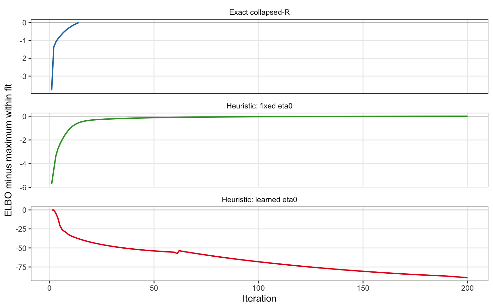
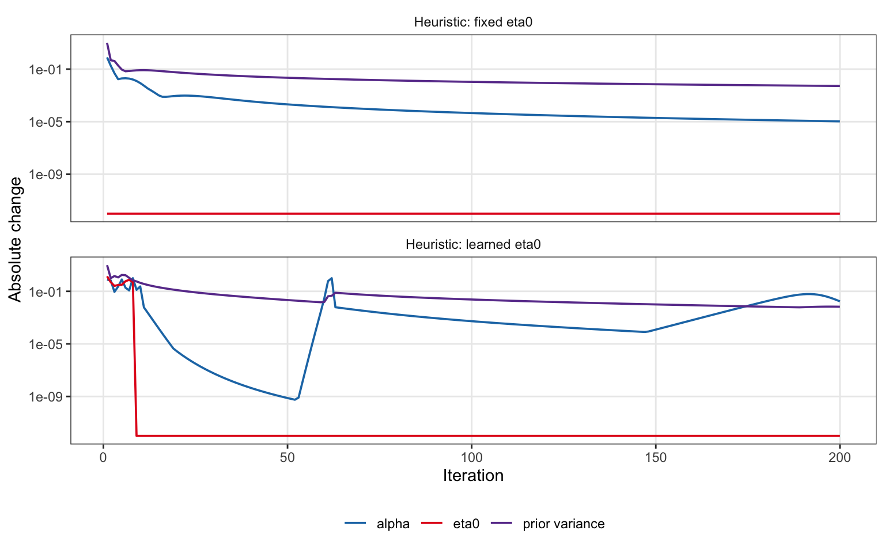
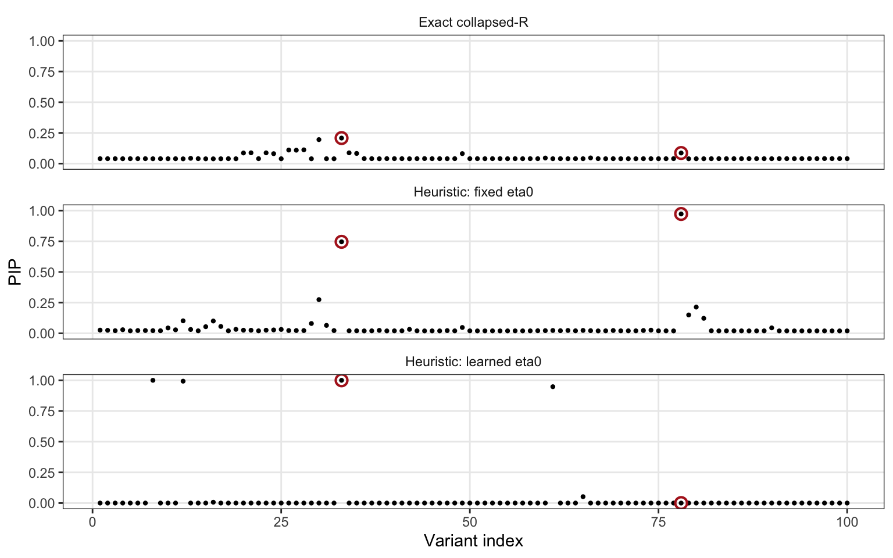

Last updated: 2026-08-20
Checks: 7 0
Knit directory: susie-IW/
This reproducible R Markdown analysis was created with workflowr (version 1.7.2). The Checks tab describes the reproducibility checks that were applied when the results were created. The Past versions tab lists the development history.
Great! Since the R Markdown file has been committed to the Git repository, you know the exact version of the code that produced these results.
Great job! The global environment was empty. Objects defined in the global environment can affect the analysis in your R Markdown file in unknown ways. For reproduciblity it’s best to always run the code in an empty environment.
The command set.seed(20260820) was run prior to running
the code in the R Markdown file. Setting a seed ensures that any results
that rely on randomness, e.g. subsampling or permutations, are
reproducible.
Great job! Recording the operating system, R version, and package versions is critical for reproducibility.
Nice! There were no cached chunks for this analysis, so you can be confident that you successfully produced the results during this run.
Great job! Using relative paths to the files within your workflowr project makes it easier to run your code on other machines.
Great! You are using Git for version control. Tracking code development and connecting the code version to the results is critical for reproducibility.
The results in this page were generated with repository version e430a95. See the Past versions tab to see a history of the changes made to the R Markdown and HTML files.
Note that you need to be careful to ensure that all relevant files for
the analysis have been committed to Git prior to generating the results
(you can use wflow_publish or
wflow_git_commit). workflowr only checks the R Markdown
file, but you know if there are other scripts or data files that it
depends on. Below is the status of the Git repository when the results
were generated:
Ignored files:
Ignored: .DS_Store
Ignored: analysis/.DS_Store
Ignored: experiments/.DS_Store
Ignored: plos-paper/
Unstaged changes:
Modified: experiments/03-null-estimate-R-coverage-power.pdf
Modified: experiments/03-null-estimate-R-estimated-eta0.pdf
Modified: experiments/04-null-estimate-R-demonstration-PIP.pdf
Modified: experiments/figures/05-compare-susie-rss-L2.pdf
Modified: experiments/figures/05-compare-susie-rss-L3.pdf
Note that any generated files, e.g. HTML, png, CSS, etc., are not included in this status report because it is ok for generated content to have uncommitted changes.
These are the previous versions of the repository in which changes were
made to the R Markdown
(analysis/06-heuristic-collapsed-R.Rmd) and HTML
(docs/06-heuristic-collapsed-R.html) files. If you’ve
configured a remote Git repository (see ?wflow_git_remote),
click on the hyperlinks in the table below to view the files as they
were in that past version.
| File | Version | Author | Date | Message |
|---|---|---|---|---|
| Rmd | e430a95 | dodat-stats | 2026-08-20 | Add SuSiE-IW analyses and experiment results |
The exact collapsed-R update supplies
\[ \widehat R = E_q(\omega^{-1})\{\eta_0\bar R+Nvv^\top\} \]
to the IBSS update. Its diagonal is generally not one. This page examines the heuristic replacement
\[ \widetilde R=\operatorname{cov2cor}(\widehat R). \]
Only the update of the variational distribution of the regression effects is changed. The updates of (q()), \(\eta_0\), and the effect-specific prior variances, and the displayed collapsed-R ELBO, are still calculated under the original model. Consequently, the displayed ELBO is a diagnostic and is not guaranteed to increase.
The positive scalar (E_q(^{-1})) cancels from cov2cor,
so the working matrix is equivalently
\[ \widetilde R=\operatorname{cov2cor} \{\eta_0\bar R+Nvv^\top\}. \]
We generate reference LD (R_0) from a human coalescent simulation, draw the in-sample LD (R) from the SuSiE-IW model, and simulate two weak-LD effects in the ratio (7:5). To focus on the new update, the fitted value of \(\lambda\) is fixed at its generating value. We compare the exact collapsed-R algorithm, the heuristic with \(\eta_0\) fixed at its true value, and the operational heuristic that learns \(\eta_0\). The heuristic fits are deliberately continued for 200 iterations instead of stopping at the first apparent plateau.
result_file <- file.path(
"experiments", "heuristic-collapsed-R-elbo-study.rds"
)
if (isTRUE(params$rerun_analysis) || !file.exists(result_file)) {
source(file.path("experiments", "simulation-iw-collapsed-R.R"))
source(file.path("code", "02-AIW-and-AIW-N.R"))
source(file.path("code", "03-SER-fallback-and-plot.R"))
source(file.path("code", "04-heuristic-collapsed-R.R"))
seed <- 17L
J <- 100L
N0 <- 1000L
N <- 200000L
h2 <- 1e-3
true_lambda <- 1e-3
true_eta0 <- 100
true_L <- 2L
fitted_L <- 5L
long_run_iterations <- 200L
R0 <- simulate_coalescent_reference_ld(
coalescent_sample_size = N0,
reference_sample_size = N0,
number_of_variants = J,
seed = seed,
heritability = h2
)
Rbar_true <- make_stabilized_reference_ld(R0, true_lambda)
set.seed(1000000L + seed)
R <- standardize_correlation(sample_inverse_wishart(
degrees_of_freedom = true_eta0 + J + 1,
scale_matrix = true_eta0 * Rbar_true
))
candidates <- unique(as.integer(round(seq(
max(2, 0.1 * J), min(J - 1, 0.9 * J),
length.out = min(80L, J - 2L)
))))
first <- candidates[which.min(abs(candidates - round(J / 3)))]
available <- candidates[abs(candidates - first) >= floor(J / 4)]
second <- available[which.min(abs(R[first, available]))]
causal <- c(first, second)
beta <- numeric(J)
beta[causal] <- c(7, 5)
beta <- beta * sqrt(h2 / drop(crossprod(beta, R %*% beta)))
set.seed(2000000L + seed)
noise <- as.numeric(t(chol(R)) %*% stats::rnorm(J)) / sqrt(N)
v <- as.numeric(R %*% beta + noise)
exact_time <- system.time({
exact <- fit_collapsed_r(
v = v, R0 = R0, N = N, L = fitted_L,
lambda_grid = true_lambda,
eta0 = NULL, eta0_multiplier = 1,
max_iter = long_run_iterations, tol = 1e-4,
track_elbo_updates = TRUE
)
})
fixed_time <- system.time({
heuristic_fixed <- fit_collapsed_r_heuristic(
v = v, R0 = R0, N = N, L = fitted_L,
lambda_grid = true_lambda,
eta0 = true_eta0, eta0_multiplier = 1,
max_iter = long_run_iterations, tol = 1e-6,
stop_when_stable = FALSE, track_elbo_updates = TRUE
)
})
learned_time <- system.time({
heuristic_learned <- fit_collapsed_r_heuristic(
v = v, R0 = R0, N = N, L = fitted_L,
lambda_grid = true_lambda,
eta0 = NULL, eta0_multiplier = 1,
max_iter = long_run_iterations, tol = 1e-6,
stop_when_stable = FALSE, track_elbo_updates = TRUE
)
})
study <- list(
settings = list(
seed = seed, J = J, N0 = N0, N = N, h2 = h2,
true_lambda = true_lambda, true_eta0 = true_eta0,
true_L = true_L, fitted_L = fitted_L,
long_run_iterations = long_run_iterations,
causal = causal, causal_LD = R[causal[1L], causal[2L]]
),
data = list(R0 = R0, R = R, Rbar_true = Rbar_true,
beta = beta, v = v),
fits = list(
`Exact collapsed-R` = exact,
`Heuristic: fixed eta0` = heuristic_fixed,
`Heuristic: learned eta0` = heuristic_learned
),
elapsed = c(
`Exact collapsed-R` = unname(exact_time["elapsed"]),
`Heuristic: fixed eta0` = unname(fixed_time["elapsed"]),
`Heuristic: learned eta0` = unname(learned_time["elapsed"])
)
)
saveRDS(study, result_file)
} else {
study <- readRDS(result_file)
}
settings <- study$settings
fits <- study$fitsThe simulated causal variants are 33 and 78; their in-sample correlation is 0.037. The dimensions are \(J=100\), \(N_0=1000\), and \(N=200,000\), with true \(\eta_0=100\).
fit_core <- function(object) object$fit
trajectory <- do.call(rbind, lapply(names(fits), function(method) {
values <- fit_core(fits[[method]])$elbo
data.frame(
method = method,
iteration = seq_along(values),
elbo = values,
centered_elbo = values - max(values),
elbo_change = c(NA_real_, diff(values))
)
}))
trajectory$method <- factor(trajectory$method, levels = names(fits))
state <- do.call(rbind, lapply(names(fits)[-1L], function(method) {
value <- fit_core(fits[[method]])$state_trace
value$method <- method
value
}))
state$method <- factor(state$method, levels = names(fits)[-1L])library(ggplot2)
ggplot(trajectory, aes(iteration, centered_elbo, color = method)) +
geom_hline(yintercept = 0, color = "grey75", linewidth = 0.35) +
geom_line(linewidth = 0.75) +
facet_wrap(~method, scales = "free_y", ncol = 1) +
scale_color_manual(values = c("#1F78B4", "#33A02C", "#E31A1C")) +
labs(x = "Iteration", y = "ELBO minus maximum within fit") +
theme_bw(base_size = 11) +
theme(legend.position = "none", strip.background = element_blank(),
panel.grid.minor = element_blank())
Exact collapsed-R ELBO evaluated along each algorithm’s iterates. Centering is performed separately within each fit. In this example the fixed-eta0 heuristic approaches a plateau, whereas the learned-eta0 heuristic moves away from its early ELBO maximum.
Because an inactive effect-specific prior variance can continue shrinking after the PIPs have settled, the next plot separates changes in the posterior allocation, \(\eta_0\), and prior variance.
state_long <- rbind(
data.frame(method = state$method, iteration = state$iteration,
component = "alpha", change = state$alpha_change),
data.frame(method = state$method, iteration = state$iteration,
component = "eta0", change = state$eta0_log_change),
data.frame(method = state$method, iteration = state$iteration,
component = "prior variance", change = state$sigma2_log_change)
)
state_long$change_for_plot <- pmax(state_long$change, 1e-12)
ggplot(state_long, aes(iteration, change_for_plot, color = component)) +
geom_line(linewidth = 0.65) +
facet_wrap(~method, ncol = 1) +
scale_y_log10() +
scale_color_manual(values = c(alpha = "#1F78B4", eta0 = "#E31A1C",
`prior variance` = "#6A3D9A")) +
labs(x = "Iteration", y = "Absolute change", color = NULL) +
theme_bw(base_size = 11) +
theme(legend.position = "bottom", strip.background = element_blank(),
panel.grid.minor = element_blank())
Changes in the state of the two long-run heuristic fits. Values at zero are replaced only for display on the logarithmic scale.
summarize_fit <- function(method, object) {
core <- fit_core(object)
changes <- diff(core$elbo)
tail_values <- tail(core$elbo, min(20L, length(core$elbo)))
causal_pip <- core$pip[settings$causal]
data.frame(
method = method,
iterations = length(core$elbo),
eta0 = core$nu0,
negative_ELBO_steps = sum(changes < -1e-10),
largest_ELBO_drop = if (length(changes)) min(0, changes) else NA_real_,
ELBO_range_last_20 = diff(range(tail_values)),
maximum_causal_PIP = max(causal_pip),
minimum_causal_PIP = min(causal_pip),
seconds = unname(study$elapsed[method])
)
}
endpoint <- do.call(rbind, Map(summarize_fit, names(fits), fits))
rownames(endpoint) <- NULL
knitr::kable(endpoint, digits = 4)| method | iterations | eta0 | negative_ELBO_steps | largest_ELBO_drop | ELBO_range_last_20 | maximum_causal_PIP | minimum_causal_PIP | seconds |
|---|---|---|---|---|---|---|---|---|
| Exact collapsed-R | 14 | 13.9284 | 0 | 0.0000 | 3.7972 | 0.2080 | 0.0863 | 0.262 |
| Heuristic: fixed eta0 | 200 | 100.0000 | 0 | 0.0000 | 0.0043 | 0.9724 | 0.7457 | 0.496 |
| Heuristic: learned eta0 | 200 | 1.0000 | 198 | -10.1758 | 3.2702 | 1.0000 | 0.0000 | 88.180 |
pip_data <- do.call(rbind, lapply(names(fits), function(method) {
data.frame(method = method, variant = seq_len(settings$J),
pip = fit_core(fits[[method]])$pip)
}))
pip_data$method <- factor(pip_data$method, levels = names(fits))
ggplot(pip_data, aes(variant, pip)) +
geom_point(size = 0.8, color = "black") +
geom_point(
data = subset(pip_data, variant %in% settings$causal),
shape = 1, stroke = 1.1, size = 2.8, color = "firebrick"
) +
facet_wrap(~method, ncol = 1) +
coord_cartesian(ylim = c(0, 1)) +
labs(x = "Variant index", y = "PIP") +
theme_bw(base_size = 11) +
theme(strip.background = element_blank(), panel.grid.minor = element_blank())
Endpoint PIPs. Red circles identify the two simulated causal variants.
The fixed-\(\eta_0\) heuristic behaves well in this example. Its exact-model ELBO happens to increase toward a plateau, although monotonicity is not guaranteed, and the two causal variants receive PIPs of 0.746 and 0.972. The posterior allocations change by only 1.1e-05 at iteration 200. An inactive effect-specific prior variance continues to shrink slowly, which explains why the full state-change diagnostic has not yet reached the strict numerical tolerance.
The learned-\(\eta_0\) heuristic does not behave well. It selects \(\widehat\eta_0=1\), the lower edge of the search interval, and has 198 decreasing ELBO steps. Its allocation is still changing after 200 iterations and it retains only one of the two causal signals while assigning very large PIPs to several noncausal variants.
This failure has a natural feedback interpretation. As \(\eta_0\) becomes small, \(\eta_0\bar R+Nvv^\top\) becomes dominated by the rank-one term \(Nvv^\top\). Correlation standardization then converts that term into an extreme working correlation pattern aligned with the observed marginal associations. The resulting effect allocation can make an even smaller \(\eta_0\) attractive under the original-model profiling step. The update of \(q(b)\) and the update of \(\eta_0\) are therefore not optimizing a common objective, and the feedback need not settle at a useful fixed point.
The exact collapsed-R ELBO should be retained as a diagnostic, but it cannot serve as a convergence certificate for this heuristic. More importantly, the jointly learned version should not replace the exact collapsed-R algorithm in primary analyses without an additional stabilizing rule. The fixed-\(\eta_0\) version remains useful for controlled experiments, including the proposed choice \(\eta_0=N_0\), but its empirical behavior must be evaluated separately.
sessionInfo()R version 4.5.2 (2025-10-31)
Platform: aarch64-apple-darwin20
Running under: macOS Tahoe 26.5.1
Matrix products: default
BLAS: /System/Library/Frameworks/Accelerate.framework/Versions/A/Frameworks/vecLib.framework/Versions/A/libBLAS.dylib
LAPACK: /Library/Frameworks/R.framework/Versions/4.5-arm64/Resources/lib/libRlapack.dylib; LAPACK version 3.12.1
locale:
[1] C.UTF-8/C.UTF-8/C.UTF-8/C/C.UTF-8/C.UTF-8
time zone: America/Chicago
tzcode source: internal
attached base packages:
[1] stats graphics grDevices utils datasets methods base
other attached packages:
[1] ggplot2_4.0.3 workflowr_1.7.2
loaded via a namespace (and not attached):
[1] gtable_0.3.6 jsonlite_2.0.0 dplyr_1.2.0 compiler_4.5.2
[5] promises_1.5.0 tidyselect_1.2.1 Rcpp_1.1.2 stringr_1.6.0
[9] git2r_0.36.2 callr_3.8.0 later_1.4.8 jquerylib_0.1.4
[13] scales_1.4.0 yaml_2.3.12 fastmap_1.2.0 R6_2.6.1
[17] labeling_0.4.3 generics_0.1.4 knitr_1.51 tibble_3.3.1
[21] rprojroot_2.1.1 RColorBrewer_1.1-3 bslib_0.10.0 pillar_1.11.1
[25] rlang_1.3.0 cachem_1.1.0 stringi_1.8.7 httpuv_1.6.17
[29] xfun_0.56 S7_0.2.2 getPass_0.2-4 fs_2.1.0
[33] sass_0.4.10 otel_0.2.0 cli_3.6.6 withr_3.0.3
[37] magrittr_2.0.4 ps_1.9.1 grid_4.5.2 digest_0.6.39
[41] processx_3.8.6 rstudioapi_0.18.0 lifecycle_1.0.5 vctrs_0.7.3
[45] evaluate_1.0.5 glue_1.8.1 farver_2.1.2 whisker_0.4.1
[49] rmarkdown_2.30 httr_1.4.8 tools_4.5.2 pkgconfig_2.0.3
[53] htmltools_0.5.9